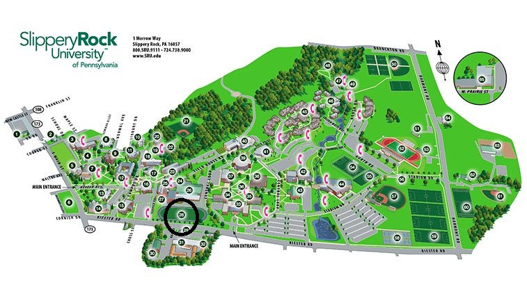
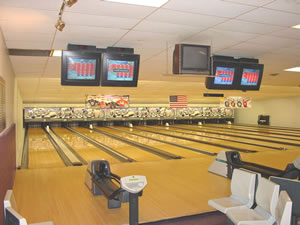

Name of Place
DESCRIPTION
Anything else you want to add

Mihalik-Thompson Stadium Complex
Like sports? Visit Mihalik-Thompson Stadium Complex to see many different sports teams from Slippery Rock compete. Go Rock!
Robert N. Aebersold Student Recreation Center (ARC)
Like to work out or play sports? Visit the ARC! The 82,000 square foot facility has components for everyone! Including an aquatic center, rock climbing wall, and a Fitness center!
Ski Lodge/ Campground
Want to escape from the cluttered college life but don’t have a car to go far? Why not visit the Ski Lodge / Campground? The campsites can be reserved for free by SRU students for campfires/cookouts up until 11 pm. Escape the college life for a night!

Heinz Field
If you like to watch football, why don’t you stop in and see the Steelers play. Heinz Field is home to the Steelers, and the Pittsburgh Panthers. Stop at the Clark Bar and Grill for something to eat!

Mystery Mayhem Escapes
Want to go to an escape room with a bunch of friends? Well, there is one located right in Slippery Rock! Bring a group of friends and attempt to escape. Can you make it out?
Bowl-O-Drome
Like bowling? Why don’t you go to Grove City to the Bowl-O-Drome? Great place to go bowling with family and friends!
